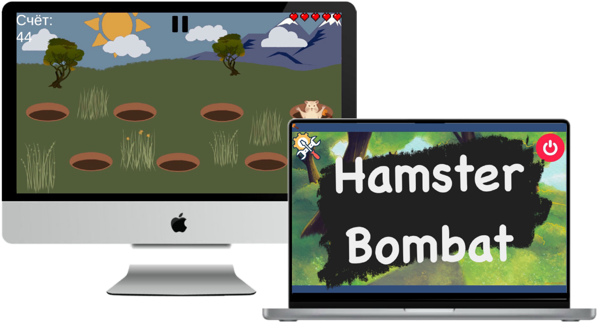
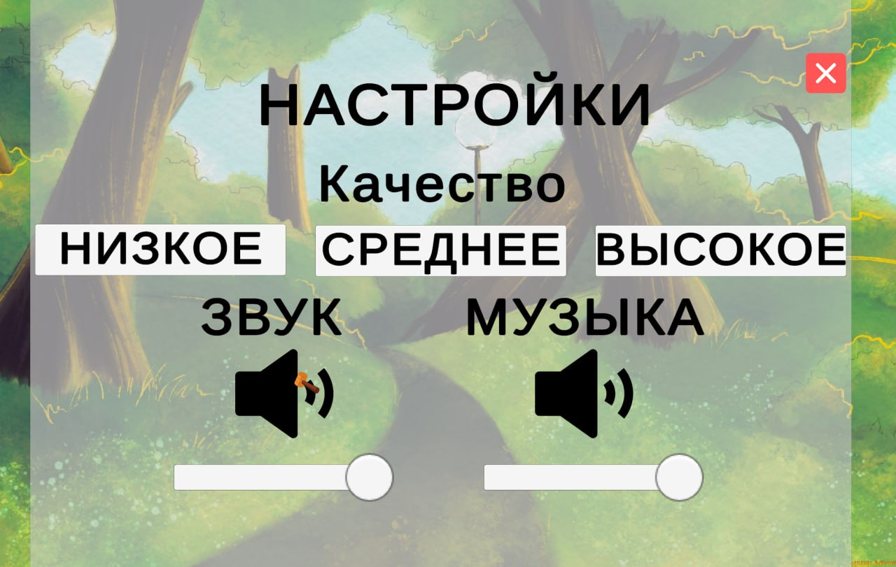
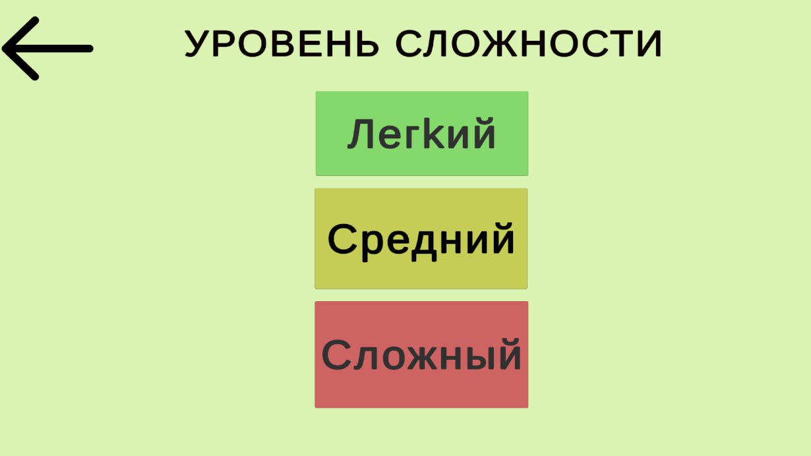

“Hamster Bombat” - это интенсивная захватывающая аркадная игра с собственной стилистикой, где игрокам предстоит проверить свою реакцию и моторику рук. События игры разворачиваются на давным-давно забытой лужайке, где вам предстоит продержаться под натиском хомяков как можно большее время.
Геймплей
На главной сцене перед игроком предстаёт лужайка с 7-ю норами. В любой из нор в случайном порядке появляется одна из возможных вариаций хомяка (обычный либо же с бомбой). Задача игрока ударить молотком по обычному хомяку, не дав ему сбежать. За это игроку будут начислены очки в порядке, оговорённом выше. Если же человек ударит хомяка с динамитом, показатель жизней игрока уменьшится на одно значение. Важно уточнить, что побег хомяка без динамита также влечёт уменьшение показателя жизней.
Сводка по настройкам
С самого начала игрока встречает красочное игровое меню, которое соблюдает общую стилистику игры. В данном меню игрок может:

- Открыть настройки игры, где предоставлены следующие функции:
- Настроить уровень графики в игре на своё усмотрение и по системным требованиям;
- Включить/выключить звуковые эффекты от различных источников звука;
- Включить/выключить музыкальное сопровождение на каждом этапе игры.
- Перейти на сцену настройки уровня сложности.
- Выйти из игры.
Уровни сложности
На сцене настройки уровня сложности перед игроком предстаёт выбор из трёх уровней сложности, которые бросают игроку вызов в зависимости от его решения:
- Легкий уровень сложности является минимальным и даёт игроку беззаботно расслабиться в игре, давая максимальное время на реагирование и передышку.
- Средний уровень сложности заставляет игрока слегка сконцентрироваться на игре, уменьшая время на реагирование и длительность передышки.
- Сложный уровень сложности требует от игрока максимальной реакции, концентрации и полной самоотдачи для достижения максимально возможного результата. Время на реагирование минимально, время на отдых нет.

В Hamster Bombat предусмотрена система наград в зависимости от сложности.
Награда, начисляемая игроку после удара по хомяку:
- 1 очко - Легкий уровень сложности.
- 2 очка - Средний уровень сложности.
- 3 очка - Сложный уровень сложности.
Уровни графики
В Hamster Bombat предусмотрена система трех уровней графики, который пользователь может настроить на своё усмотрение и по системным требованиям
Всего три уровня графики:
- Низкая
- Средняя
- Высокая